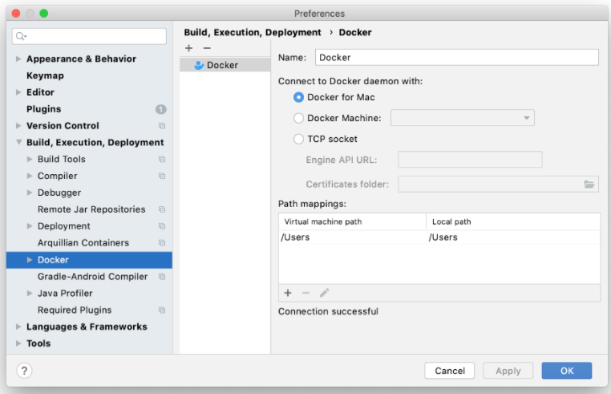

Connect Docker with Pycharm for Python Coding
Docker can be connected to Pycharm for Python Coder
Source: Jetbrains - Docker and Pycharm
- Install and Open Docker
- Check for proper internet connection
- Enable Docker connection through TCP protocol
- Configure and Connect to Docker Daemon
